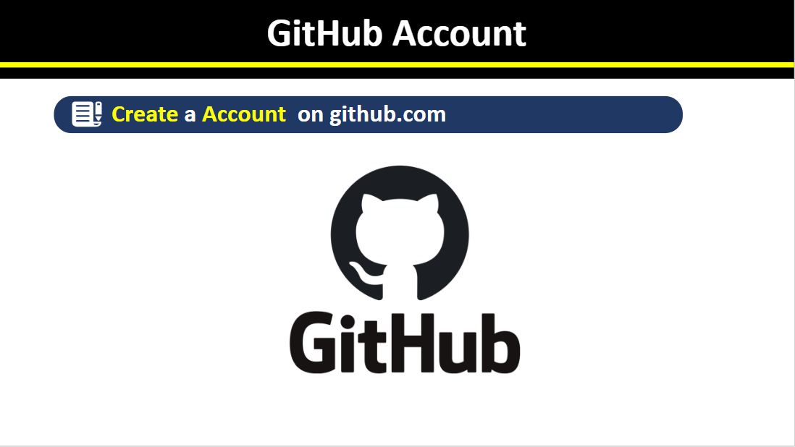
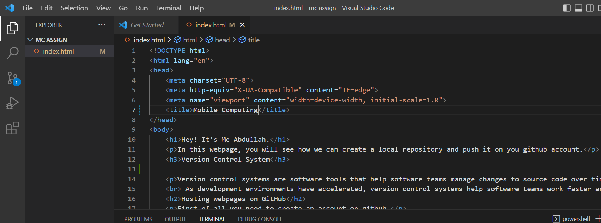
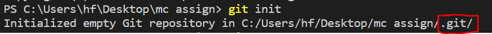
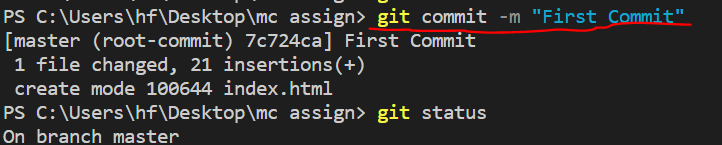
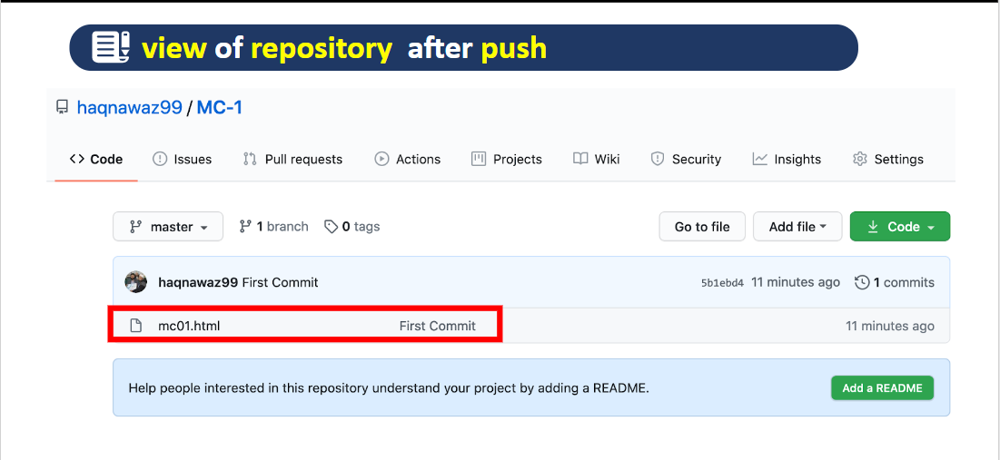

In this webpage, you will see how we can create a local repository and push it on you github account.
Version control systems are software tools that help software teams manage changes to source code over time.
As development environments have accelerated, version control systems help software teams work faster and smarter.
First of all you need to create an account on github.
Make an html file on your system and write some code in it.
Then, you need to run the command git init in your vs code terminal.
A hideen .git folder will be created in your current working directory
in which all the
information regarding push request, pull request, git status and everything you will do with git.
You can check the status by using the command git status, it will tell you that which
files are not been added, which files are at the staging phase etc.
Then, you need to run the command git add {filename} or . (to add all the files in the staging phase)
Now you can commit your work by using the command git commit -m (any message)
Make a repository on Git-Hub and copy the http link as mentioned below.
Run the command git remote add origin (http Link)
In Git, branches are a part of your everyday development process.
Git branches are effectively a pointer to a snapshot of your changes.
When you want to add a new feature or fix a bug—no matter how big or
how small—you spawn a new branch to encapsulate your changes.
In order to get the details of git branch, you can visit the do so by clicking on the following link:
Git Branch in DetailA staging step in git allows you to continue making changes to the working directory,
and when you decide you wanna interact with version control, it allows you to record changes
in small commits. Suppose you have edited three files (a.html, b.html, and c.html).
After that you need to commit all the changes so that the changes to a.html and b.html were a
single commit, while the changes to c.html were not logically associated with the first two files
and were done in a separate commit.
You can view your repository on your github account as shown below:
